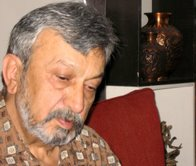
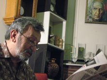
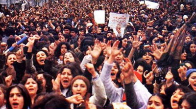

|
|

مروری بر سی سال پیش در این ایام
8مارس 57 اولین برخورد جدی جامعه با موضوع زنان بود
گفتگو : الناز انصاری- نفیسه آزاد
يكشنبه2 فروردین 1388
سایت تغییر: چند ساعت مانده به پایان 8مارس و ورود به ساعت های بامدادی 9 مارس مهمان خانه ای بودیم که صاحب آن سی سال پیش در همین روز در بزرگترین اعتراض زنان ایران شرکت کرده بود. جمشید ارجمند خاطره سی ساله اش را با ما سهیم شد و ما را از موسسه کیهان تا مقابل کاخ دادگستری برد تا فریاد های زیادی چون «یا روسری/ یا تو سری» را بشنویم و برگردیم خانه تا امروز، تا آرزوی تغییر قوانین، تغییر قانون بی زن.
جمشید ارجمند، مولف و مترجم بیش از 20کتاب و ده ها نقد سینمایی است. از معروف ترین ترجمه های او "دنیای کوچک دن کامیلو" و "شوهر مدرسه ای" است. او تالیف کتاب هایی در حوزه جامعه شناسی تلویزیون و خانواده را نیز در کارنامه خود دارد. رد قلم او از نشریات فردوسی، رودکی، خوشه و سیاه سفید تا نشریات امروز به جا مانده است.
گفت و گو ما با جمشید ارجمند را می خوانید:
می خواهم قبل از ورود به بحث راهپیمایی 8مارس زنان در سال 57 به زمینه فعالیت های سیاسی تان در سالهای پیش از انقلاب اشاره اي بکنید تا زمینه همراهی شما با زنان در راهپیمایی کمی روشن شود.
شروع فعالیت جدی من در عرصه سیاسی در دانشکده حقوق و در سال های 40 بود که در دوره اي از آن مسئول تشکیلات دانشجویی جبهه ملی در دانشکده حقوق بودم. آن سالها دانشجویان این دانشکده خیلی فعال بودند. البته فشار حکومت هم روی دانشگاه و جبهه ملی افزایش یافته بود. دستگیری هم خیلی زیاد داشتیم و به همین خاطر هم تشکیلاتمان را طوری سازماندهی کرده بودیم که بتواند بعد از هر دستگیری دوباره فعالیت کند.
در میان دانشکده ها دانشکده حقوق وادبيات و علوم فعالیت های سیاسی خیلی زیادی داشت. خاطرم هست دکتر عباس شیبانی را که هميشه دانشجوی سال ششم دانشكده پزشكي بود! می گذاشتند همیشه دم امتحان می گرفتندش و نمی توانست امتحان بدهد. چند نفري از فعالان که یادم هست بنی صدر، سلامتیان، حبيبي، ارفع زاده، حق جو، ... بودند. من در این چارچوب تا حدودی رشد کردم اما طبعا مثل همه بچه هایی که در دانشگاه مبارزه می کنند، دانشگاه که تمام شد همه چیز هم تمام شد.
در همین تشکیلاتی که شما مسئولش بودید، چند عضو زن داشتید یا دانشجویان زن چقدر در برنامه هایتان مشارکت داشتند؟
در دانشکده حقوق زن فعال سياسي نداشتیم. شاید علت اش هم قدری فضای دانشکده حقوق بود که به سنت همیشه مردانه بود. خیلی فضای خشکی داشت. در حالی که درهمه دانشکده ها بی هیچ خط کشی دختر و پسر با هم کار می کردند، تنها جایی که یک مقدار خط کشی سنتی داشت همین دانشکده ما بود. مثلا دانشکده ادبیات این روال را نداشت و تعداد دختران فعال در آن خیلی زیاد بود و از همه این دختران برجسته تر زنده یاد، شهید پروانه اسکندری بود. اولین کسی که در آغاز حرکت جبهه ملی دوم در دانشگاه سخنرانی کرد ، پروانه بود. این سخنرانی از جهاتی اهمیتی زیاد داشت. ما شروع کارمان در سال 39آمادگی برای برگزاری مراسم 16 آذر بود. از روز 16 آذر فعالیت دوره دوم جبهه ملی شروع شد. آن زمان دستور داشتیم که راهپیمایی فقط داخل دانشگاه داشته باشیم . شعار ندهیم و فقط تنها صدایی که قرار بود شنیده شود صدای یک سخنران رسمی بود که آن سخنران خانم پروانه اسکندری بود. پروانه دختری فوق العاده احساساتی و فوق العاده توانا در سخنوری بود. پروانه اولین صدایی بود که در شروع مبارزات دانشجویی دوره دوم جبهه ملی شنیده شد. با ارائه این نمونه خواستم اشاره ای بكنم به موقعیت دختران در دانشکده های دیگر.
پس تا اینجا تعامل تشکیلاتی با زنان نداشتید؟
نخیر نداشتيم. البته این را بگویم تا جایی که به یاد دارم آن زمان اصلا تشکیلاتی خاص زنان در دانشگاه وجود نداشت. میان احزاب هم فقط حزب توده بود که سازمان مدرن و منظمي بود و تشکیلاتی هم برای زنان داشت. بقیه جریانات يا چنين تشكل هايي نداشتند يا اگر هم داشتند، چندان كار آمد نبود. جبهه ملی هم با وجود اینکه تشکیلات زنان داشت اما به موضوع زنان به شکل جداگانه ای نمی پرداخت.

بعد از این سال ها شما مدتی را در فرانسه گذراندید. فضای دانشجویی فرانسه و موقعیت زنان در آنجا، توجه شما را جلب کرد؟
بله طبعاٌ. می خواهم این را بگویم که فرماسیون فکری من در این دوره بر اثر مشاهده موقعیت دموکراتیک زنان تغییر کرد. در فرانسه ماها به عنوان خارجی نمی توانستیم وارد تشکیلات سیاسی شویم. سختگیری های پلیس فرانسه هم در این مورد زیاد بود و شاه به فرانسویان این اجازه وامكان را داده بود که با ایرانیان مخالف برخورد کنند. ولی موقعیت زنان در دانشگاه و در عرصه مبارزات سیاسی خیلی متفاوت از ایران بود.
جدا از سئوال و بدون اينکه بخواهم این را بگویم که انقلاب ایران تاثیر خیلی سازنده ای در من گذاشت، باید بگویم، نگاهم به موضوع زن و آگاهی و وقوف من به این مسئله با انقلاب شروع شد. من آن زمان در مجله "زن روز" کار می کردم. 4صفحه طنز داشتم. آن زمان دو نشریه ویژه زنان منتشر می شد. یکی "زن روز" و یکی اطلاعات بانوان که "زن روز" امکانات و تیراژ بیشتری داشت. من الان که داوری می کنم می بینم که "زن روز" واقعا چیزی نداشت و خیلی سطحی بود. همه اش پودر و ماتیک و سرخاب و آشپزی و ... بود. و من در این ها نه تنها نقشی نداشتم بلکه تا جایی هم که می شد همکاری ام با "زن روز" را کتمان می کردم. تا اینکه مرحوم مجيد دوامي سردبیر این مجله چند ماه قبل از انقلاب از ایران رفت وآقای فرج الله صبا به جای ایشان مسئولیت گرفتند و همکاری من از آن زمان در این مجله جدی تر شد.
زمانی که آقای دوامی ایران را ترک کرد مطبوعات در اعتصاب دو ماهه خود بودند. بعد از دو ماه که اعتصاب تمام شد من به صبا گفتم الان شرایطی نیست که ما "زن روز" را با همان سبک ماتیک و مد دربیاوریم. موضوع بیش از همه درباره روی جلد مجله بود که همیشه این مدگرایی را داشت. او گفت که اگر این جلد را یک دفعه عوض کنیم تیراژمان از بین می رود. ولی خب به هر حال باید یک جوری با هم کنار می آمدیم که روی جلد نه یک دفعه می شد جمیله بوپاشا و نه جلدی که تا آن وقت کار می شد. "زن روز" سالها با همان سبک منتشر شده بود و واقعا نمی شد یک تغییر بزرگ ناگهاني در آن داد. در تمام این مدت جلدهاي "زن روز" عکس یک زن بود، آن هم زنی زیبا كه انگار از آرایشگاه و خیاطی درآمده. بعد از بحث های زیاد تصمیم گرفتیم عکس مصدق را روی جلد بگذاریم و همین عکس معروف را (با اشاره دست به قاب عكسي روي ديوار) هم چاپ کردیم. بعد از آن هم عکس های انسانی تری از زنان منتشر کردیم.
آن زمان داستان هایی در "زن روز" چاپ می شد که معروف ترین اش سلسله داستان هاي"برسر دوراهی" بود و بعداً این داستانها به شکل نجیبانه تری ادامه یافت و بعد هم حذف شد. همه این تغییرات البته به سختی اعمال می شد ولی باور داشتیم که آن سبک نوشتن و عکس ها دیگر به درد حال و هوای آن روزها نمی خورد.
در مورد مطالب هم آن زمان، يعني در موقع تغيير خط مشي مجله فکر کردم بهترین کاردراین شرایط آموزش سیاسی به زنان است. چون به خصوص زنی که "زن روز" می خواند حتما زن باسواد امروزی بود اما فقط امروزی بود و دانش دیگری نداشت و فکر کردم لازم است که به همین تیپ مخاطب چنین چیزی داده بشود. زنانی که مخاطب "زن روز" بودند آگاهی چنداني از مفاهیم سیاسی و مسائل روز نداشتند، چون این نشریه و البته بقيه نشريات هیچ وقت چنین مطالبی برای زنان تولید نمی کردند. برای همین یک سری مقاله نوشتم با عنوان "نازنین، لیلا و مسائل سیاسی" که البته مایه دراماتیک پر رنگي نداشت ولی به هر حال یک قصه داشت. در این سری مقالات هربار یک چیزی عنوان می شد و بهانه می شد برای طرح مفاهیم کلیدی سیاسی. مثلا لیلا می پرسيد اگر بانک ها ملی بشوند چه می شود و ...؟ با این دست آویز من مسئله ناسیونالیزاسيون يا ملي شدن را طرح می کردم که ملی شدن این است، با دولتی شدن فرق می کند و ... به این ترتیب ما یک سلسله مقاله با دم دست ترین وضروری ترین مفاهیم به زبان ساده کار کردیم.
جز موضوع آگاهی سیاسی که به آن اشاره کردید، دیگر چه چیزی را مسـئله زنان و قابل طرح در "زن روز" می دانستید؟
من باور ندارم که آن زمان اصلا کسی به این فکر افتاده باشد که زنان چه كم و کسری در حقوق دارند. واقعا در آن روزها بی حقوقی و تبعیض علیه زنان موضوع حاد و فراگیری نبود که حالا عده ای هم بخواهند برای رفع آن تلاش کنند موضوعي كهنه و معمولي بود. خواست های آن زمان به قدری حاد و معین بود و از سالها قبل در مبارزات سیاسی به دنبال این مطالبات می گشتیم که این موضوع به چشم نمی آمد. زنان نیز تیزي تيغ این نابرابری ها را روی پوست خود حس نمی کردند. من هم به هر حال تا جایی که امکانش را داشتم در همین حد به موضوع پرداختم که البته همان زمان هم موضوع بی اهمیتی نبود. چون به خاطر همین سلسله مقالات و سر مقاله هایی که نوشته بودم بعد از اخراج گروهی روزنامه نگاران از سیستم کیهان تنها من و هادی خرسندی بودیم که حق و حقوقي نگرفتیم.
در سرمقاله هایتان به چه موضوعاتی اشاره می کردید که به زندگی زنان ارتباط پیدا می کرد؟
بیشترشان هشدارهایی بود درباره موقعیت زنان بعد از انقلاب. احساس خطر نسبت این موضوع در بین بسیاری از روشنفکران وجود داشت و فقط من نبودم که نسبت به این موضوع حساسیت نشان می دادم. اتفاق هایی بعد از انقلاب در دفتر کیهان و "زن روز" افتاد که ما فکر می کردیم غیر طبیعی است و بعدها فهمیدیم خیلی هم طبیعی بوده! سانسورها شدت می گرفت و در نهایت بخش عمده ای از تحریریه وقت زن روز بازخرید شدند. با همه تسویه حساب کردند جز من و گويا كامبيز درمبخش وهادی خرسندی که حکایت درازی دارد. چند نفر به عنوان مدیر و صاحب امتياز و مديرمسؤل رفتند و آمدند و خلاصه وضع ما تغییر نکرد. بعد از ما هم سیستم کیهان به سرعت تغییر کرد و در نهایت خانم زهرا رهنورد مسئولیت "زن روز" را به عهده گرفت و ظاهر و مطالب مجله هم با چنان سرعتی تغییر کرد که انگار هیچ مرزی بین کفر و ایمان وجود نداشت.
آیا به این فکر کردید که ادبیاتی ویژه زنان و توسط زنان تولید کنید؟
سیستم "زن روز" مختلط بود و زنان زیادی هم در آنجا کار می کردند. اتفاقا زنان روزنامه نگار معروف و خوش قلمی هم بودند. اما هدایت اصلی نشریه دست مردان بود. الان اسم این زنان درست یادم نیست ولی تفاوت عمده ای در جایگاه شغلی زنان وجود داشت، با تاکید براين که سهم اصلی با مردان بود و طرحی که در زمان دوامی ریخته شده بود بیشتربراي جلب توجه زنان بود و البته با محوريت قصه و تبلیغات و مد.
سال های دهه 40 خانم سناتور منوچهریان طرح قانون خانواده را مطرح کرد و بعدتر مجله زن روز هم لایحه ای در این باره پیشنهاد داد و به نظر سنجی هم درباره آن پرداخت. آن زمان دیده شد که در مطبوعات جو بدی نسبت به خواسته های حقوقی زنان از جمله حق طلاق ایجاد شد موضع گیری ها در آن زمان نسبت به مباحث حقوقی زنان چه بود؟
خوب شد پرسیدید. چون این موضوع را به یاد نداشتم و اتفاقا این موضوع به "زن روز" و آیت الله مطهری هم كشيده شد. ای کاش جزئی تر یادم بود، چون نمی دانم ما سئوال کردیم یا خودشان مقاله نوشتند [زن روز در پی یک نظرسنجی سلسله مقالاتی به قلم ابراهیم زنجانی دادیار وقت عالی کشور منتشر کرد و همزمان آیت الله مطهری هم به او پاسخ داد]. ايشان خیلی ملایم این تغییرات را نقد کرده بودند و اگر هم می خواستند تذکر بدهند یا وجه اسلامی موضوع را به رخ بکشند، خیلی با ملایمت این کار را کرده بودند. این موضوع و موضع گیری آیت الله مطهری خیلی جدی شد . این اولین باری بود که يك روحاني در "زن روز" مطلب می نوشت. موضع هیات تحریریه هم با تغییر قانون موافق بود. هم "زن روز" و هم "اطلاعات بانوان" در این ماجرا کباده کشی می کردند.

همزمان با آخرین روزهای کاری شما در زن روز راهپیمایی زنان در روز 8مارس 1978-1357 ( 18 اسفند 1357) رخ داد. شما هم در این تجمع شرکت داشتید. چطور شد از این تجمع مطلع شدید و در آن شرکت کردید
من صبح همان روز در جریان قرار گرفتم و نمی دانستم قرار است راهپیمایی شود. البته موضوع اعتراض به حجاب اجباری طرح شده بود، ولی من در شرایطی تصمیم گرفتم به اين مراسم بروم که دیدم زنان روزنامه نگار مجله می خواهند در راهپیمایی شرکت کنند. کادر زنانه مجله پا شدند و راه افتادند که بروند. مردان شاید از این جهت که حجاب را مسئله خودشان نمی دانستند و حوصله اعتراض به آن را نداشتند نیامدند. گفتم من هم می آیم. زنان همکارم هم استقبال کردند و گفتند حالا كه مي خواهي شركت كني، پس خودت ريش سفيد ما باش. البته من سن زيادي نداشتم .40 سالم بود. زنان همكار برای اعتراض به این وضع خیلی جدی بودند و همین جدیت هم بیشتر جذبم می کرد. خب برای خود من هم خیلی ناگوار بود که یک دفعه بگویند همه این همکاران ما باید از فردا با چادر بیایند. زمزمه های حجاب اجباری از اول انقلاب بود. این احساس فشار وجود داشت که این راهپیمایی هم درست بعد از انقلاب راه افتاد. من مرد بودم و ظاهراً موضوع به من ربط نداشت، اما توجه و حساسیت مرا هم جلب کرد. ما در قالب یک هیات نسبتا رسمی و بخشی از موسسه کیهان در این اعتراض شرکت کردیم.
پس شما همراه با زنان تحریریه راهی شرکت در راهپیمایی روز زن شدید. شرحی از آن روز می دهید؟
تا جایی که به یاد دارم، صبح نسبتا زود ساعت 8-9 بود که ما از موسسه کیهان حرکت کردیم به طرف کاخ دادگستری. راه زیادی هم نبود. از زنانی که آن روز با هم برای اعتراض رفتیم متاسفانه نامی به یاد ندارم ولی یکی از آنها به من گفت احتمال برخورد و حمله هست.
آن زمان یک زهرا خانمی بود، از آن زن هایی که چادر را می بندند پر کمرشان و شایعاتی هم درباره گذشته زهرا خانم سر زبان ها بود. آن زمان دار و دسته ای داشت از اوباش که کارشان حمله به معترضان بود و هشدار همکارم هم درباره گروه او بود. وضع شهر آن روزها به هر حال آماده چنین حرکت هایی بود و حرکت گروه های زنان به یک سمت نمی توانست موضوع غیرعادی تلقی شود. هر چه به دادگستری نزدیک تر می شدیم جمعیت هم بیشتر می شد به طوری که مقابل دادگستری جمعيت متراکم بود. من از زنان پرسیدم که برنامه چیست و آنها گفتند که همینجا می ایستیم و سخنرانی هست. یادم نیست چه کسی قرار بود سخنرانی کند. ما در خیابان ایستاده بودیم و جا هم نبود. بعد از سمت سنگلج (جنوب خیابان) به شمال سر و صداهایی شنیدیم. نزدیک تر که شدند من شعار "یا روسری یا تو سری" را شنیدم. خیلی شعار زشتی بود و آدم احساس اشمئزاز می کرد که حالا اگر هم می خواهی روسری سر کسی کنی چرا این طرف اش را می کنی تو سری؟ و خب این گروه های کوچک چماقدار حمله کردند و همینطور سنگ وچوب و چماق بود که فرود می آمد. دیدم که از جمعیت ما کیهانی ها که حدود 30-40 نفر بودیم کسی نمانده است. حقشان هم بود موضوع چماق بود و سر و بدن. آن هم از جانب کسانی که انتظار کتک خوردن برسر چنین آرمانی را نداشتند. موضوعی که حق طبیعی آدم ها بود برای انتخاب پوشش. این چیزی بود که از آن روز به یادم مانده. بعدها هم خیلی صحبت شد درباره آن اتفاق؛ اما در زن روز نتوانستند مخالفتشان را چاپ کنند ولی فکر می کنم در کیهان یک چیزی چاپ شد.

شما مردی بودید که در این تجمعی که یک خواست مشخص زنانه داشت شرکت کردید. هنوز هم وقتی مردان در جنبش زنان کار می کنند، در این فضای مرد محور بار تحقیرآمیزی را از سوی مردان روی خود حس می کنند. شما چنین احساسی را نداشتید؟
نه! هیچ مردی از نزدیکانم به من نگفت که چرا رفتی و در نهایت آزادی این کار را کردم. چون پیشاپیش این را حس می کردم که موضوع زنان و حقوق زنان از آرمان های مشترک ماست.
جز شما مرد دیگری از موسسه کیهان در این راهپیمایی شرکت داشت؟
پرویز خوانساری ريیس گروه گرافیک زن روز بود که آمد. جز من و او کس دیگری يادم نمي آيد. در راهپیمایی هم تعداد مردان خیلی کم بود.
بعد از حمله ای که صورت گرفت چه اتفاقی افتاد؟ خود شما چه احساس و برداشتی از آن برنامه داشتید؟
وقتی که یک حرکتی روبه رو می شود با یک حرکت تند و خشن، واکنش ها قابل پیش بینی نیست. مثلا اگر تیراندازی بشود همه می گريزند، چون موضوع تیر است و گوشت. اما اینجا یک احساس دیگری بود. میدیدی که همان چماق به دستی که برای زدن زنان می آید به نوعی از خود ماست. به هر حال از نیروهای انقلاب بودند. و حالا با سنگ و چوب و چماق می آمدند. آن هم برای اعتراض به چیزی که آن روزها حق بدیهی محسوب می شد.
من احساس همبستگی شدیدی با این آرمان می کردم. فکر می کردم این هم جزو آرمان های اصلی انقلاب برای همه ماست. موضوع حقوق و آزادی زن جدا از آرمان های انقلاب نبود. فکر می کردم فریادی اگر می زنیم وبرای دموکراسی و آزادی بیان واعتراض به توقیف روزنامه آیندگان و روزنامه آهنگر و پيغام امروز، همینطور باید برای زن هم فریاد بزنیم. چون او هم به عنوان بخشی از حرکتی که در انقلاب بود حالا حق و سهم خودش را از این انقلاب می خواهد. خب چطور او پابه پای من آمده بود در حرکت های انقلاب شرکت کرده بود، حالا هم ما مردان باید به حمايت او برویم. واقعا فکر می کردم که یک صدایی می گوید بیا، تو باید بیایی.
مهرانگیز کار در خاطراتش از آن روز، از زنانی می گوید که به نمایندگی از احزاب در برنامه سخنرانی کردند و یا از زنی یاد می کند که چادرش را به نشانه ی اعتراض پرت کرد. شما این وقایع را به یاد دارید؟
نه به یاد ندارم، چون اصلا سخنرانی ندیدم. آنچه به یاد داشتم دقیقاً شرح دادم ولی این موارد را به یاد ندارم.
بعد از این جریانات حجاب خیلی زود جا افتاد. چون از معترضان به اجبار حجاب بودید روند این تغییر در پوشش توجه تان را جلب می کرد؟
این را اول بگویم که اصلا باور نمی کردم حکومت بتواند این موضوع را تا این حد پیش ببرد. واقعا فکر می کردم حالا یک حرفی است كه زده شده و با این اعتراض هم کوتاه می آیند. اولین حرکت ها هم برای جا انداختن موضوع، از ادارات و مراکز دولتی شروع شد. گفتند فقط در ادارات زنان باید روسری داشته باشند. همکاران ما تا دم در بی حجاب می آمدند و در اداره روسری سر می کردند. مثل زمانی که دختران چادری عکس این کار را می کردند و در مدرسه بی حجاب می نشستند و با حجاب تا در مدرسه می رفتند. آن زمان هم فقط حرف روسری بود و نه چادر و مقنعه و روپوش. بخشنامه هم شد که زنان در داخل ادارات باید روسری داشته باشند. بعد گفتند نه این طور نمی شود که دم در حجاب را بردارند، باید در ماشین هم سرشان باشد. زنان البته چاره ای هم نداشتند و همین طور قدم به قدم جا افتاد.
بعد از این سرکوب که زنان هم در آن تا حدی منفعلانه عمل کردند، و سالهای بعد از انقلاب، فعالیت بخشی از جنبش زنان در کمپین یک میلیون امضا نمود پیدا کرد. و حرکت های مشخصی بعد از آن و در حوزه های دیگر شکل گرفت. می خواهم نظرتان را درباره این حرکت و قوانینی که درباره زنان در کشور وجود دارد بدانم و اینکه با توجه به تجربه تان چشم انداز این حرکت را چطور می بینید؟
اعتقادم این است که این حرکت یکی از دشوارترین حرکت ها در ایران است. یعنی انتظار به نتیجه رسیدن اش خیلی دشوار است. خیلی از این قوانین از زمانی که در ایران قانون نوشته شده وجود داشته است. اما یک چنین استحکامی باعث توقف این حرکت هم نمی شود. حرف احقاق حق خوشبختانه در بین زنان درک شده و زنان بی بیم و هراسی بر سر آن ایستاده اند. در اين روند، گاهي و جاهايي رژيم تغييراتي در وضع موجود ايجاد مي كند. مثل همين موضوع ارث كه تغييراتي در آن داده شد. تبعیض در حق ارث موضوع بسیارمهمی است. خصوصا برای قشر عظیمی از زنان در روستاها که پابه پای مردانشان روی زمین کار سنگین یدی می کنند، اما شوهرشان که می میرد هیچ حقي بر زمین ندارند. زنی که در روستا کار می کند وقتی شوهرش می میرد همه چیزش از بین می رود. من سر دبير فصلنامه ای به نام اقتصاد کشاورزی و توسعه بودم كه یک شماره آن را به موضوع زنان كشاورز اختصاص دادیم. خانم ژاله شادی طلب براي همین شماره مقاله بسیار خوبی نوشت كه متاسفانه در آن شماره به چاپ نرسيد. ايشان در آن مقاله وضعيت زن كشاورز بي زمين در نتيجه فوت شوهرش را ترسيم كرده بود. نابرابری در ارث یکی از بدترین تبعیض هایی است که علیه زنان در قانون قید شده است و موضوع دیروز و امروز هم نیست. به همین خاطر فکر نمی کنم این قوانین به همین زودی تغییر کند و نیاز به سال ها مبارزه دارد. موضوع هم فقط حاکمیت سیاسی نیست چون در زمان رژیم سابق هم این اتفاق رخ نداد.
موضوع این است که نمی شود به راه حل های مقطعی دلخوش کرد. وگرنه خود من هر چه دارم از همین حالا به طور مساوي به نام دختر و پسرم کرده ام. هر چند به پسرم اعتماد دارم ولی کاملا قانونی این کار را کرده ام. اما مگر چند نفر این کار را می کنند. باید با تغییر این قوانین این برابری شامل همه زنان بشود، نه فقط عده ای از زنان که پدر یا همسرشان اقدامی در این باره کرده اند.
شما سال هاست ناظر موقعیت زنان در ایران هستید. در مقایسه با پیش و سالهای اول بعد از انقلاب، چه تغییر عمده ای در جامعه زنان می بیینید؟
من معتقدم امروز آگاهی زنان بسیار بالاتر از گذشته است. آن زمان، زن آگاهی و وقوف امروز را نداشت. اگر بود در بین چند زن بود و این آگاهی تا این حد عمومی نشده بود. وقوف امروز نتیجه حرفها و نوشته های زنان روشنفکری است که مدام دراین باره گفته اند. زمانی که مثلا همان موضوع راهپیمایی 8مارس رخ داد، اولین برخوردهای جامعه با موضوع زنان بود. زن در آن زمان در شرایط انفعالی به سر مي برد و الان فعال شده است. همچنان که در عمل هم پویایی و فعالیتش را نشان داده و بر سر مطالباتش ایستاده است.
مردها در این تبعیض ها عملاً گير نيفتاده اند که ببینيم چه می کنند و به اصطلاح چند مرده حلاجند. این شما هستید که درگیر این قوانین هستید و مبارزه می کنید. چنین حرکتی برای اولین بار است که در تاریخ ایران رخ می دهد و زنان هم خوب ایستاده اند.
من روزهای اولی که موضوع یک میلیون امضا را شنیدم گذاشتم به حساب یک موضوع تشریفاتی که خب مثل امضا جمع کردنی دانستم که برای خيلي چیزها می شود. بعد دیدم كه كار جدی است و خیلی خوب است. حالا به کجا می رسد پیش بینی می کنم که فعلا به جایی نمی رسد. طرف مقابل زنها یک فرد یا حتی یک حاکمیت نیست. شاید بشود گفت یک "جَو" يا نظريه عمومي مخصوصي است كه آن هم ناگزیراست تا آخر ایستادگی کند. شما هم ناگزیرید بایستید. یک جنگ رو در روی جالبی شده که آخر داستان یک طرف باید بخورد زمین و طوری زمین بخورد که از جا بلند نشود واز نظر تجربه تاریخی باید بگویم که این شما نیستید که بلند نمی شوید